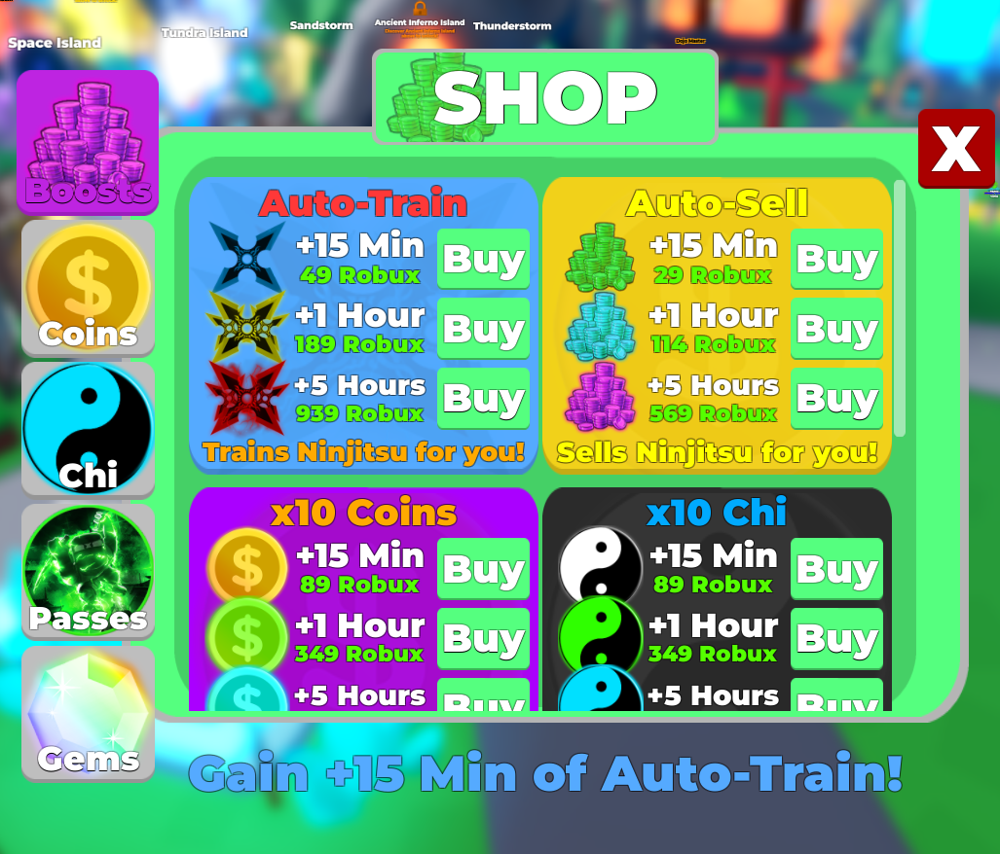
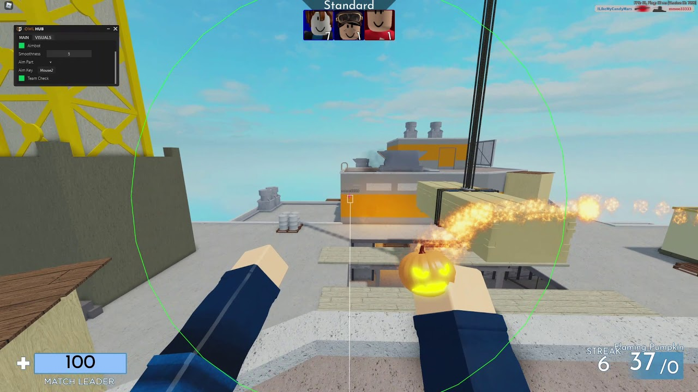

Roblox és una espècie de "Metavers", bàsicament un joc que conté múltiples jocs creats pels mateixos jugadors. Aquests jocs poden variar des de simuladors de conduir fins a jocs fps... Les possibilitats són il·limitades.
Posaré 2 exemples per justificar l'us de cheats.
El primer de tot és per no haver de gastar diners amb "DLC" que abusen de l'usuari, fent pagar absurdes quantitats de diners (sovint com a subscripcions) per a automatitzar processos del joc.
Per exemple si és un joc on has de farmejar, el joc et donarà la opcio de comprar un dlc per 24h que et farmejara 24h automàticament sense que requereixi la teva assistència
Un cheat pot realitzar aquestes tasques automaticament per tu per un cost de 0$
I com a segon exemple tenim fer enfadar a crios.
Dit directament sona cruel, però realment és superentretingut veure la reacció de la gent per exemple quan estàs jugant a un fps, i de sobte comences a disparar des del cel volant i no poden fer res per guanyar-te... És fascinant....
Existeixen molts cheats per a roblox gratuïts amb anuncis o de paga mensual (entre 10$ i 20$)
Dit això les nostres recomanacions són:
Firma el nostre formulari per a fer una demanda a Roblox per a permetre l'ús d'aquests programes de forma llegítima. (lol)